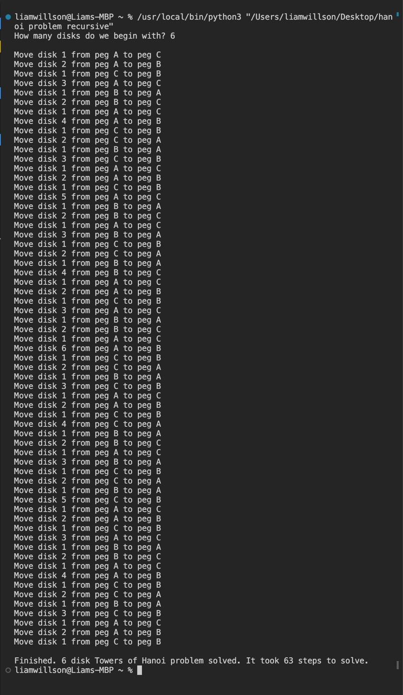
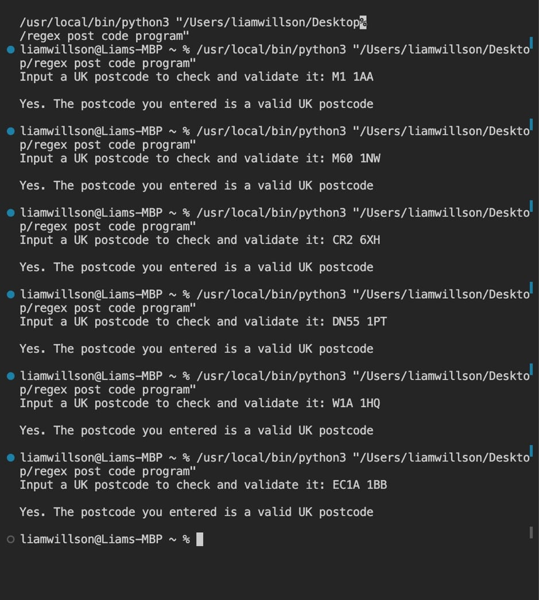
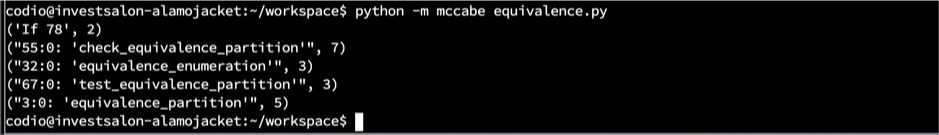
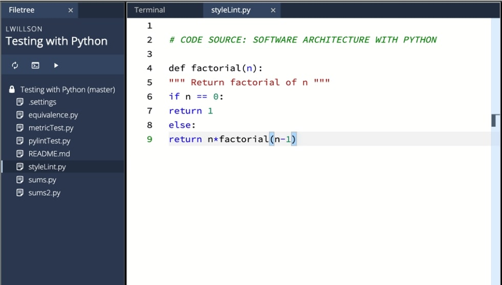
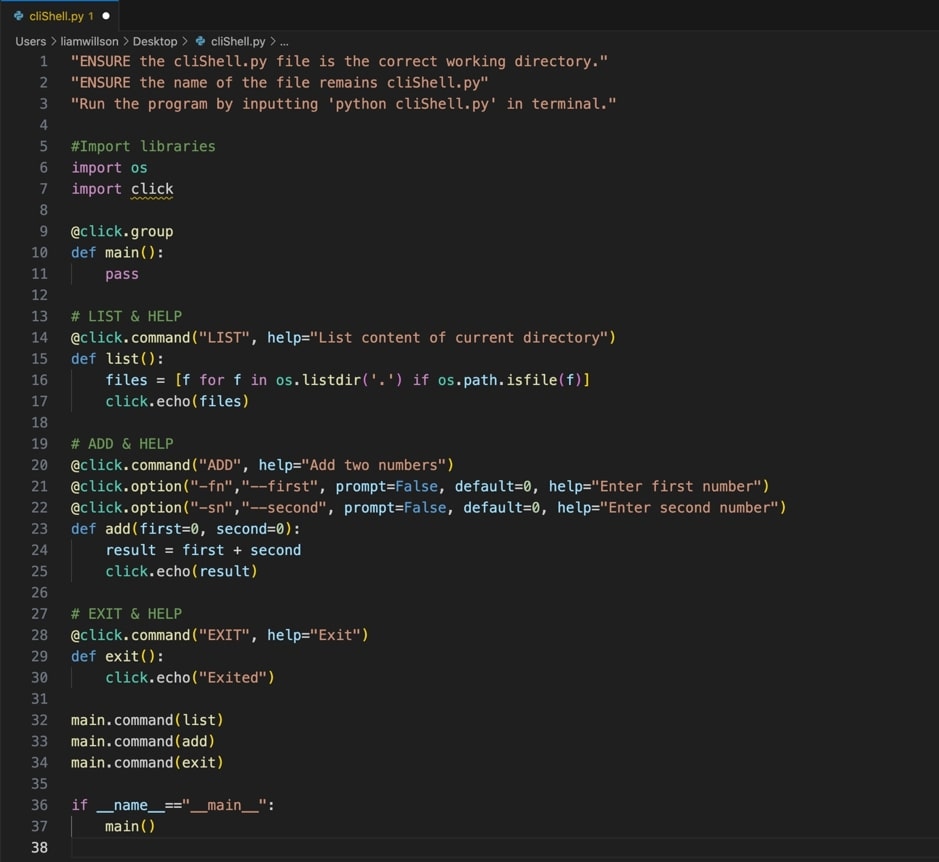

e-Portfolio Activities
Explore the e-Portfolio Activities Using the Directory Below:
-------------------------------------------------------------------------
Unit 1 Activities
Collaborative Discussion #1Initial Post (in Unit 1)
The OWASP (2023) coding weakness I have focussed on in my discussion and represented using a UML flowchart is, Broken Access Control. I have utilised a use case diagram to represent Broken Access Control because this OWASP weakness is defined as an instance of a malicious user story in which a user (attacker) is acting outside their intended permissions and hence, mimicking administration or a higher-access level to assume their controls. Therefore, because a use case diagram captures the way in which users of software interact and benefit from it, modelling Broken Access Control is most appropriate using a use case diagram (Common Weakness Enumeration, 2017; OWASP, 2023).
Although, modelling Broken Access Control using UML activity diagrams would also be appropriate because these particular UML models show the way in which events are executed within a system over time. Because Broken Access Control requires an attacker to manipulate authorised access and this involves a sequence of malicious behaviours/activities, a UML activity model will successfully present in-depth detail of the process (OWASP, 2023; Rumbaugh, Jacobson & Booch, 1999).
Furthermore, a UML sequence diagram has the potential to be a successful representation of Broken Access Control. This is because it would represent how messages are distributed between objects and how an attacker could take advantage. Although, a UML sequence diagram would be the least ideal UML model to utilise because only the messages between objects involved in authenticating a user would be represented. Before this the attacker has already gained access/control and is in a position to enact malicious intent (OWASP, 2023; Rumbaugh, Jacobson & Booch, 1999).
References:
Common Weakness Enumeration (2017) CWE View: Weaknesses in OWASP Top Ten. Available from: https://cwe.mitre.org/data/definitions/1026.html [Accessed 14 August 2023].
OWASP (2023) OWASP Top Ten. Available from: https://owasp.org/www-project-top-ten/ [Accessed 14 August 2023].
Rumbaugh, J., Jacobson, I. & Booch, G. (1999) The Unified Modelling Language Reference Manual. Addison Wesley Longman, Inc.
Appendix:
UML Use Case Model: OWASP (2023) Broken Access Control Weakness
Peer Response #1 (in Unit 2)
Thanks for your post.
I agree that a UML activity diagram well represents the behaviour of users and the system in the case of illustrating an instance of
Broken Access Control. I also appreciate the specification that your diagram illustrates, particularly the vulnerability occurrence as it
relates to Broken Access Control (Rumbaugh, Jacobson & Booch, 1999).
Although, I recommend that the ‘how’ an attacker (user) accessed the information to be able to bypass the authorisation check is included
in the diagram in some way. This would better illustrate the vulnerability of the system, even if the illustration is as simple as describing
that the authorisation requires merely input of the word ‘password’ or some other simple form of broken access. Upon analysing your illustration,
I have in turn realised mine own would benefit from a more specific illustration of the authorisation step.
Furthermore, I agree that a UML class diagram would not be effective in showing dynamic sequence of events that lead to security vulnerability
as it relates to Broken Access Control. Although, I disagree with the notion that a UML use case diagram would not be effective. A use case diagram
presents user stories as they refer to the users of the system (inclusive of malicious user; attackers). Security vulnerabilities are vulnerabilities
exploited by people. Therefore, I determine the importance of UML use case diagrams as high in representation of Broken Access Control because they
illustrate user interactions (Rumbaugh, Jacobson & Booch, 1999).
References:
Common Weakness Enumeration (2017) CWE View: Weaknesses in OWASP Top Ten. Available from: https://cwe.mitre.org/data/definitions/1026.html
[Accessed 14 August 2023].
OWASP (2023) OWASP Top Ten. Available from: https://owasp.org/www-project-top-ten/ [Accessed 14 August 2023].
Pillai, A. (2017) Software Architecture with Python. Birmingham, UK. Packt Publishing Ltd.
Rumbaugh, J., Jacobson, I. & Booch, G. (1999) The Unified Modelling Language Reference Manual. Addison Wesley Longman, Inc.
Peer Response #2 (in Unit 2)
Thanks for your post.
I enjoyed reading your post regarding an OWASP (2023) weakness I personally have not yet illustrated a diagram for. I appreciated your inclusion
of the ‘Log’ behaviour in your UML activity diagram and explanation of how the absence of logging at different steps of the activity process, as it
relates to the system, would be a weakness that leads to compromise of the system. Although, I would argue, what is the efficiency in logging every
single activity of the system at every step? I suggest that perhaps logging crucial intersections which are not bypassable would be more efficient as
it relates to logging information and more efficient as it relates to providing auditors and monitors with usable and meaningful data (Rumbaugh, Jacobson
& Booch, 1999).
I agree with your discussion that a UML use case diagram would be meaningful by illustrating how actors interact with the system and are prone to
or affected by the logging actions performed by the system. Furthermore, I believe that the activity diagram you have presented delivers a more
meaningful illustration versus a sequence diagram. This is because the most important focus of the diagram is the logging and the ‘noise’ in a
sequence diagram would deduct meaning from logging represented in the diagram. Furthermore, to this notion the current activity diagram you have
presented may benefit from highlighting the ‘Log’ steps (Rumbaugh, Jacobson & Booch, 1999).
References:
OWASP (2023) OWASP Top Ten. Available from: https://owasp.org/www-project-top-ten/ [Accessed 14 August 2023].
Pillai, A. (2017) Software Architecture with Python. Birmingham, UK. Packt Publishing Ltd.
Rumbaugh, J., Jacobson, I. & Booch, G. (1999) The Unified Modelling Language Reference Manual. Addison Wesley Longman, Inc.
Summary Post (in Unit 3)
I am writing this upon reviewing of my peer’s responses, receiving feedback myself and creating my own initial post and accompanying UML use case
diagram to discuss the OWASP (2023) coding weakness, Broken Access Control. I have improvements and learnings to add to my initial submission. Upon
discussion with peers, I realised that a UML activity diagram is most likely and the most appropriate UML diagram to represent the OWASP Broken Access
Control weakness with. This is because they illustrate the dynamic nature of a system. The ‘how’ does something occur (OWASP, 2023; Rumbaugh, Jacobson
& Booch, 1999).
Furthermore, this change could be reflected in mine own UML use case diagram to show more detail and focus regarding the ‘how’ an attacker would gain
access to ‘view payroll information’ at all. I have realised this is vitally important especially as it relates to the concept of development and then
how a development team would use a use case diagram to visualise the weakness and implement development solutions that prevent this weakness from being
taken advantage of (OWASP, 2023).
Additionally, I have learnt that a UML sequence diagram would be effective in illustrating dynamics of the system as it relates to gaining Broken
Access Control. It would present more detail for complex Broken Access Control occurrences where the attacker must deploy more malicious techniques
versus simply knowing the password in order to authenticate themselves as administrators, for example (Rumbaugh, Jacobson & Booch, 1999).
Importantly, however, I learnt a UML use case diagram is appropriate to use and represent the OWASP Broken Access Control weakness because my assumption
that it is important to illustrate user stories, was supported by my peers. In developing secure software, it is important to view the attacker’s (user’s)
goals and objectives from their perspective and the ‘how’ they go about gaining Broken Access Control at all. By understanding the attacker’s (user’s) needs
and requirements, the development team can protect against these and predict how an attacker might go about gaining Broken Access Control in the future
(OWASP, 2023; Rumbaugh, Jacobson & Booch, 1999).
References:
OWASP (2023) OWASP Top Ten. Available from: https://owasp.org/www-project-top-ten/ [Accessed 14 August 2023].
Pillai, A. (2017) Software Architecture with Python. Birmingham, UK. Packt Publishing Ltd.
Rumbaugh, J., Jacobson, I. & Booch, G. (1999) The Unified Modelling Language Reference Manual. Addison Wesley Longman, Inc.
-------------------------------------------------------------------------
Unit 2 Activities
Seminar 2 PreparationTable
Software Development Stages Of The Scrum Agile Life Cycle
Blog Post
Some say that people are the biggest risk of cyber security…
Let’s look at why? As it relates to 5 terms from the ISO/IEC Standard 27000 Section 3 ‘Terms and Definitions’…
3.5 authentication [provision of assurance that a claimed characteristic of an entity is correct] -
Authentication defines which people are allowed and which are not. The management of who is and is not authenticated to
view, edit, export or interact in any way with the information stored in a system or the system itself, is integral to
ensuring that cyber-attacks are prevented. This can be done through the use of an authentication system which blocks
unauthenticated users from access and more importantly, reports this event to the system administration for review and
management. Authentication is also integral to ensure for the development team and ‘inside’ people (Online Browsing Platform,
2018).
3.9 competence [ability to apply knowledge and skills to achieve intended results] -
Competence is an issue of people. Ensuring that the people involved in development of the software are competent and
able in their role and importantly their understanding of security and ensuring a secure software development process
is also integral. Without ensuring competence of ‘inside’ people, the security of the software development process is
compromised and resources will eventually need to be expended to return to and fix the errors that cyber attackers (people)
take advantage of (Online Browsing Platform, 2018).
3.12 consequence [outcome of an event (see Section 3.21) affecting objectives (see Section 3.49)] –
Consequence is the definitive deterrent of people. In essence, this defines why the biggest risk to cyber security is
people. Because without consequence, cyber-attack is certain and if it was somehow unavoidable, cyber-attack will not
occur. Importantly, the implementation of sufficient consequences by policy makers and development teams for cyber-attackers
is integral (Online Browsing Platform, 2018).
3.24 governing body [person or group of people who are accountable for the performance (see Section 3.52) and conformity of the organization (see Section 3.50)] –
Governing bodies are bodies of people that manage people and consequences imposed. Therefore, they are integral to ensuring
cyber-attack is logged and dealt with accordingly and must be in place to ensure that governance occurs and thus, cyber-attack
is defined as opposite and antagonistic to governance (Online Browsing Platform, 2018).
3.35 information system [set of applications, services, information technology assets, or other information-handling components] –
Information systems are built by people and exploited by people. Information systems are the mechanisms by which people store
information and inherently, they store sensitive information regarding people which is useful and valuable to people. Thus,
information systems are a target of people. Although, instead of ridding them to ensure certain security, they are necessary
in the modern world and ensuring security with policies and systems is integral to ensure they can continue to exist
(Online Browsing Platform, 2018).
Reference:
Online Browsing Platform (OBP) (2018) ISO 9000:2015(en) Quality management systems - Fundamentals and Vocabulary. Available from:
https://www.iso.org/obp/ui/#iso:std:iso:9000:ed-4:v1:en [Accessed 16 August 2023].
-------------------------------------------------------------------------
Unit 3 Activities
What is a Secure Programming Language?1. What factors determine whether a programming language is secure or not?
The factors that determine whether a programming language is secure or not:
- Secure By Default – When a programming language is secure to use out of the box with little to no configuration changes and are available at no additional cost. What is easiest and most natural for a developer to use.
- Decision Density – Defines how frequently a developer deals with decisions that are insecure by default and must consciously and correctly make the correct decision to avoid introducing a vulnerability into the system.
- Regularity of the Language – The more consistent a language is, both within a single codebase, between different codebases, between different processor Instruction Set Architectures (ISA), the less prone it will be, the easier it will be for someone to learn, and the easier it will be for a person or automation to review. On the opposite side, the more frequently, “what does this code do” is asked and the more frequently, “well, it depends”, is answered with, the harder to learn and more prone to mistakes the language will be.
- Understandability of the Details of a Variable– How easy or hard is it to look at a variable in the code, understand what it is and does, what error states are possible for that variable in particular and the implications of the variable at each point?
- Object Clarity – Like above, how easy is to understand an object in a piece of code and the related object-oriented programming components?
- Obviousness of Control Flow – How easy is it to understand when different code executes and in what order? Specifically, complex flow patterns like recursion, pre-processor generated code and function pointers make it easy to author code that is challenging to read and analyse, make errors and introduce vulnerabilities.
- Visual Parsability of the Code – Some languages force structure and that makes it easier to understand the code, while others have opted to make decisions that challenge a human’s ability to easily understand code.
- Analysability – In general how easy is analysability of code down the line.
2. Could Python be classed as a secure language? Justify your answer.
Python can be classed as a secure language. Comparatively, it’s decision density, increasing regularity of the language, understandability of the details
of a variable, object clarity and in general object-oriented programming application, obviousness of control flow and analysability are very high. Although,
a particular characteristic relating to Python leaves something to be desired. Dependencies increase the risk of attack. Commonly, Python repositories contain
more than just the code. They contain open-source packages, container images and configuration files used to provide infrastructure. The growing volume of
dependencies expands the attack surface of projects. And, on average Python projects have ~35 dependencies.
Despite this weakness, Python is more secure than C. In C comparatively, neither compile-time nor run-time checks prevent a variable of one type being changed
to or interpreted as another type. In Python, there are guarantees on the kinds of data that a given variable might hold, the allowed set of values, their
representation or the operators that may be carried out on the data.
Python is also a secure language because of how the following factors relate to it:
- Syntax
- Stacks
- Regex
- Recursion
- Queues
- Polymorphism
- Pointers
- Mutability
- Inheritance
- Grammar
- Memory Management
- Encapsulation
- Casting
- Abstraction
3. Python would be a better language to create operating systems than C. Discuss.
Whilst theoretically, Python would provide a more secure foundation on which to build an operating system, there are trade-offs for this security.
These include, operating system performance and an inability to create more base-level applications.
In Python there are almost no compilers that can generate machine code at a low level. This is required because when creating an operating system,
you need to generate machine code for the specific hardware that you want to use with the operating system you are designing. Furthermore,
at this lowest level of creating an operating system C is processor specific while Python is not.
(Cifuentes & Bierman, 2019; Pillai, 2017)
References:
Cifuentes, C. & Bierman, G. (2019) What is a secure programming language?. Summit on Advances in Programming Languages, pp. 1-15.
DOI: https://doi.org/10.4230/LIPIcs.SNAPL.2019.3
Pillai, A. (2017) Software Architecture with Python. Birmingham, UK. Packt Publishing Ltd.
Additonal Information Appendix:
The following are the features of a well-secured system:
- Least Privilege – Ensure all users and services have the least privileges required to carry out their task.
- Open Design – That is do not try to make a system secure by hiding its internals or operations.
- Fail-Safe Defaults – Assume that credentials are incorrect and make the operation fail-safe until data has been validated.
- Separation of Privilege – That is segregate users (and processes) into tiers based on levels of trust and ensure any access between tiers is checked and validated.
- The Least Common Mechanism – That is ensure that mechanisms used to access resources are not shared.
Codio Activities
Part I: Buffer Overflow in C
What happens when './bufoverflow' is run?
When ‘./bufoverflow’ is run in Terminal and a name of less than or equal to 8 characters is inputted, the system outputs the name repeated back to the User.
When a name of more than 8 characters is inputted, the system outputs:
>> *** stack smashing detected ***:
>> Aborted (core dumped)
...the program fails. See appendix.
What does the above output message mean?
The output message above means that the input does not fit into the specified buffer size of ‘8’ and is therefore, rejected and the system aborts the program or
more specifically, the core. This is protective. It prevents deliberate buffer overflow which determines a system unavailable. See appendix.
Appendix:
Part II: Buffer Overflow in Python
What is the result when 'Overflow.py' is run?
The result outputted when 'Overflow.py' is run is:
>>Traceback (most recent call last):
>> File “Overflow.py”, line 3, in
>> buffer[i]=7
>>IndexError: list assignment index out of range
So, the result is a failure of the IndexError type.
What is the result when 'pip3 install pylint' is inputted? Does this tell you how to fix the error above?
The result of inputting 'pip3 install pylint' is successful installation of the pylint linter.
Running ‘pylint Overflow.py’ outputs:
>> ************* Module Overflow
>> Overflow.py:4:0: C0303: Trailing whitespace (trailing-whitespace)
>>Overflow.py:5:0: C0304: Final newline missing (missing-final-newline)
>>Overflow.py:1:0: C0103: Module name "Overflow" doesn't conform to snake_case naming style (invalid-name)
>>Overflow.py:1:0: C0114: Missing module docstring (missing-module-docstring)
>>
>>Your code has been rated at 0.00/10
So in effect, according to the Pylint linter analysis, the code rating is 0/10 and to improve this rating, the ‘Overflow.py….’ lint recommendations outputted by the Pylint linter need to be rectified. See appendix.
Appendix:
Part III: The Producer-Consumer Mechanism
How is the queue data structure used to achieve the purpose of the code?
The queue data structure is used to define the range of variable ‘number’ to be 100 and then assign the variable ‘number’ step-wise as each number up to 100 (not
inclusive). And, for each number that the variable ‘number’ is assigned, the queue allows the system to format the result as (number, number**2) and then ‘task_done()’
ends the queuing of numbers in the range of 100 to be assigned as the variable ‘number’. Finally, q.join() blocks further queuing and returns to task_done().
What is the purpose of q.put(i)?
The purpose of q.put(i) is to queue each number in the range of 100 (not inclusive) in a queue because the range is defined as 100 (‘for i in range(100):).
What is achieved by q.get()?
The purpose of q.get(i) is to step-wise retrieve the producer queue and assign the number as the respective number that the queue has 'stepped' to in that
instantaneous moment.
What functionality is provided by q.join()?
Calling q.join() on the queue blocks and returns once the number of calls to task_done() which matches the number of calls to put() at the time that join() is called.
Extend the producer-consumer code to make the producer-consumer scenario available in a secure way. What technique(s) would be appropriate to apply?
Utilising Python linters including Pylint and flake8 would be appropriate to ensure the security of the producer-consumer.py code and ensure no mistakes or bugs or errors
are present to be causative of vulnerabilities.
The following is how the pylint linter was utilised to secure the producer-consumer.py code:
The following is how the Flake8 linter was utilised to secure the producer-consumer.py code:
The final code is as follows:
Furthermore, the security of producer-consumer.py could be increased by installing a user interface, authentication system and method to encode the data.
And, by ensuring no:
- God Objects: A class that tries to do too much, but exhibits little cohesion or integration.
- Constant Classes: A class that contains nothing but constant declarations.
- Refused bequests: A class that breaks the rules of a contract or inheritance.
- Freeloaders: A class that provides little functionality.
- Feature Envy: A class that depends almost exclusively on another class, indicating excessively close coupling.
- Long Methods: Similar to the God object an overlong or complex class.
- Parameter Creeps: Too many parameters assigned to a function or method, making calling and testing difficult.
- Minimal Cyclomatic Complexity: A function or method with too many branches or loops leading to convoluted logic again making complete testing problematic.
- Poor Naming: A function or method using overly long or short identifiers – for both variables and function/ method names - making the logic difficult to understand.
- Use of the eval() function
-------------------------------------------------------------------------
Unit 4 Activities
Seminar 2 PreparationRecursion - Towers of Hanoi Problem
Towers of Hanoi Recursive Solve (Asks for number of disks, then executes the moves, then displays the number of moves executed.):
Example output using 6 disks of Hanoi:

Testing discovered that the theoretical maximum number of disks that my program can move without generating an error is 996. Then (because), when 997 is attempted to be inputted, the following RecursionError output is generated:
Therefore, the theoretical maximum number of disks before RecursionError is 1000. This is because 4 lines of output are reserved for the formalities that my program produces in the output (the lines of output for structure (the blank lines) & the lines of output for inputting the number of disks and stating the completion in number of steps). This maximum exists because of the limit that the default Python IDE has.
So, what limits the number of iterations? What is implication for application and system security?
Python documentation states the default IDE has a recursion depth of 1000. If a function exceeds this limit, it can be increased. This is done using ‘sys.setrecursionlimit(n)’. The default limit is stated to exist to prevent infinite recursion from causing overflow of the C stack and in turn crashing Python.
The implication for this application then and system security is the risk of an attacker deliberately producing a Python RecursionError in order to crash the program and determine it unavailable. This is a type of stack overflow which in turn is a type of buffer overflow. And thus, certain security standards of commercially available applications therefore prohibit recursion functions altogether because of this weakness.
Reference:
Python (2023) sys - System-specific parameters and functions. Available from: https://docs.python.org/3/library/sys.html [Accessed 1 September 2023].
Regex - UK Postcodes
A Python program that complies with the rules stipulated by the UK postcode system and IdealPostcodes & Kurdi (2020):
Testing using postcode examples provided:

Program limitations:
- It only works for UK postcodes. If you need to support other countries, you might need to have a separate regular expression for each one of them and execute it based on the country provided.
- It cannot guarantee that the postcode actually exists. For instance, a postcode may be in a correct format, but the same postcode may be defunct.
- The extraction method can generate false-positive extraction if a string contains multiple numbers.
Ensure your regular expression patterns are not susceptible. This is done by reducing the number of combinations performed by the regex program. For example, avoid using nested quantifiers. Also, control backtracking. Limit or suppress backtracking by using atomic groups and lookaheads. Atomic groups describe when the ‘?>’ syntax is used to control backtracking and lookaheads describe when the ‘?=’ syntax is used to control backtracking (RegexBuddy, 2023).
Reference:
IdealPostcodes & Kurdi (2020) The UK Postcode Format. Available from: https://www.ideal-postcodes.co.uk/guides/uk-postcode-format [Accessed 1 September 2023].
RegexBuddy (2023) Preventing Regular Expression Denial of Service (ReDoS). Available from: https://www.regular-expressions.info/redos.html [Accessed 2 September 2023].
-------------------------------------------------------------------------
Unit 5 Activities
Equivalence Testing In PythonAfter executing the ‘pip3 install pylint’ command to install the Python linter Pylint in Terminal, the command ‘pylint equivalence.py’ was executed. The following was the output. The code had a rating of 5.85/10:
Upon experimenting with correcting the above outputted Pylint lints, a code rating of 10.00/10 was achieved:
After executing the ‘pip3 install flake8’ and ‘pip install mccabe’ commands in Terminal to respectively install the Python linters Flake8 and Flake8 sub-linter Mccabe, the command ‘flake8 equivalence.py’ was executed. The following was the output:
Upon experimenting with and eventually correcting the above Flake8 lints, no more Flake8 recommended lints remained:
Then, the command ‘python -m mccabe equivalence.py’ was executed. The following was the output:

Upon experimenting with and eventually correcting the above Mccabe lints, the code had been improved by utilising these static linting tools (Pylint, Flake8 & Mccabe (Flake8 sub-linter):
Cyclomatic Complexity
The Cyclomatic Complexity of code is the number of linearly independent paths within it. I believe that it should remain a general measure
by which the quality of code should be determined. This is because it is a good measure of control flow in software. It helps developers
identify high-complexity areas of code that may be difficult to understand and maintain, increasing the risk of errors and bugs. Although,
it is understood that cyclomatic complexity can be misused as a performance metric where developers aim to reduce cyclomatic complexity
ignorant of other factors. If used in conjunction with these factors such as, code readability, maintainability and test coverage then
it is meaningful and remains relevant today (Ebert, Cain, Antoniol, Counsell & LaPlante, 2016).
It is also relevant to developing secure software. This is because a lower measure of cyclomatic complexity generally determines the
more efficient a piece of code and thus, the more accurately and precisely it can be maintained and understood by competent developers. Thus,
this ensures a higher likelihood of secure development because of a lesser likelihood for bugs and errors to be present or become present
in code that scores a lower cyclomatic complexity (Ebert, Cain, Antoniol, Counsell & LaPlante, 2016).
Reference:
Ebert, C., Cain, J., Antoniol, G., Counsell, S. and LaPlante P. (2016). Cyclomatic Complexity. IEEE Software, 33(6), pp. 27-29. DOI: https://doi.org/10.1109/MS.2016.147
-------------------------------------------------------------------------
Unit 6 Activities
Seminar 3 PreparationTesting In Python
Question 1 - What happens when the code ('python styleLint.py') is run in Codio? Can you modify this code for a more favourable outcome? What amendments have you made to the code?
When 'python styleLint.py' is run in Codio, the output returns:
>> File “styleLint.py”, Line 5
>> “”” Return factorial of n “””
>>
>>IndentationError: expected an indented block
Or, what the screenshot below evidences:
Yes. The code can be modified for a more favourable outcome. The ammendments made are as follows. The styleLint.py code is changed from this:

To this:
Question 2 - Review the errors returned by 'pylint pylintTest.py. Can you correct each of the errors identified by 'pylint pylintTest.py'?
Yes the errors can be corrected.
The errors returned by 'pylint pylintTest.py':
The pylintTest.py code is changed from this:
To this:
Question 3 - Review the errors returned by 'flake8 pylintTest.py'. In what way does this error message differ from the error message returned by Pylint?
The errors returned by 'flake8 pylintTest.py':
These errors differ from those returned by 'pylint pylintTest.py' in this way:
While Pylint moreso identifies violations with naming conventions and layout (docstrings, import order, etc.), Flake8 moreso enforces and flags style inconsistencies (inclusive of those related to whitespace and blank lines). Although, both are static linting tools that identify code smell and enforce a coding standard (Flake8, 2023; Pylint, 2023).
Review the errors returned by 'flake8 metricTest.py'. Can you correct each of the errors returned by Flake8?
Yes the errors can be corrected.
The errors returned by 'flake8 metricTest.py':
The errors are corrected.
Now when flake8 metricTest.py' is run, the following output is achieved:
Question 4 - Run the Mccabe linter on 'sums.py' & sums2.py' and find out the results. What are the contributors to cyclomatic compelxity in each piece of code?
The results from running 'python -m mccabe sums.py' & 'python -m mccabe sums2.py':
So, the total cyclomatic complexity of 'sums.py' = 3.
And, the total cyclomatic complexity of 'sums2.py' = 4.
Therefore, 'sums.py' is determined to have less cyclomatic complexity or less independent linear paths than 'sums2.py'.
The contributors to cycolmatic complexity in each piece of code:
In 'sums.py', the defining of the ‘test_sum()’ function and the defining of the ‘If __name__ = “__main__”’ functions are the contributors to cyclomatic complexity.
On the other hand, in 'sums2.py' the defining of the ‘test_sum()’ function and the ‘If __name__ = “__main__”’ functions are also contributors to cyclomatic complexity, as well as the defining of the ‘test_sum_tuple()’ function.
Therefore, there are more linear independent paths within the sums2.py code versus the sums.py code.
‘mccabe’ is a linter that checks cyclomatic complexity (install ‘pip3 install mccabe’ &, run ‘python -m –mccabe sums.py’ or ‘python -m –mccabe sums2.py’).
References:
Flake8 (2023) Flake8 3.7.6 Documentation. Available from: https://flake8.pycqa.org/en/3.7.6/index.html [Accessed 27 August 2023].
Pylint (2023) Pylint 3.0.0a8-dev0 Documentation. Available from: https://www.pylint.pycqa.org/en/latest/index.html
[Accessed 27 August 2023].
-------------------------------------------------------------------------
Unit 7 Activities
What is an Ontology?The definition of an ontology is, ‘a set of concepts and categories in a subject area or domain that shows their properties and the relations between them’. The ontology that has been presented by my reading is a Service Oriented Architecture (SOA) ontology. My understanding is that SOA is a software development method that involves using software components called “services” to create business applications. Each service provides a business capability, and services can also communicate with each other across platforms and languages.
Although, I understand that there is a major challenge associated with the implementation of a service catalogue when utilising an SOA, and that ontologies have been utilised to organise the “services” in repositories. OWL-SOA (Ontology Web Service Language) and WSMO (Web Service Modelling Ontology) have proposed that a specific ontology be used to catalogue “services” when utilising an SOA.
Important to recognise, however, ontologies have limitations. These are that they are used on runtime only and that they only deal with Web Service technology to implement services.
The OWL-SOA ontology presented by Arnaut, Oliviera & Lima (2010) to support the search and recovery of services in an SOA repository, is modelled below:
It has been informed by existing ontologies and literature and tested with services of a large multinational business.
Could you attempt to define an ontology that would be relevant to the system that you are designing for the summative assessment?
The following is a domain ontology (the specifications of the conceptualisation of a given domain; i.e. online retailer) relevant to the online retailer system to be built in the summative assessment. Particularly, it has a focus on security:
References:
Arnaut, W., Oliviera, K., & Lima, F. (2010) OWL-SOA: A Service Oriented Architecture Ontology Useful During Development Time And Independent From Implementation Technology. 2010 Fourth IEEE International Conference on Research Challenges in Information Science, pp.523-532. DOI: https://doi.org/10.1109/RCIS.2010.5507314
Python CLI/Shell
A simple CLI/Shell in Python:

(Praka, 2018; Szabo, 2018)
The two main security vulnerabilities affecting the shell:
- Shell Command Injection: If you’re running processes or OS commands with user-supplied values or parameters, then there’s a risk of attackers injecting malicious payloads to achieve Remote Code Execution on your server.
- Using input(): Works as expected with numbers, but once you start entering strings, you’ll see it tries to find variables with the submitted names and throws an error if it can’t. It is an insecure default. Use raw_input() instead, to read user input as a string. This is related to and can facilitate Shell Command Injection.
What are recommendations you would make to increase the security of the shell?
To protect against Shell Command Injection the following can be implemented:
- Avoid system calls and user input to prevent threat actors from inserting characters into the OS command.
- Set up input validation to prevent attacks like XSS and SQL Injection.
- Create a white list of possible inputs, to ensure the system accepts only pre-approved inputs.
- Use only secure APIs—when executing system commands such as execFile().
- Execute files securely to prevent users from gaining control over the name of the program. You should also map user input to command arguments in a way that ensures user input does not pass as-is into program execution.
Pseudocode of the Python CLI/Shell:

References:
Imperva (2023) Command Injection. Available from: https://www.imperva.com/learn/application-security/command-injection/ [Accessed 20 September 2023].
Prakash, D. (2018) Write a Shell in Python. Available from: https://danishpraka.sh/posts/shell-in-python/ [Accessed 20 September 2023].
Szabo, G. (2018) Create Your Own Interactive Shell with cmd in Python. Available from: https://code-maven.com/interactive-shell-with-cmd-in-python [Accessed 20 September 2023].
Turcsanyi, G. (2023) Python Best Practices and Common Security Issues. Available from: https://avatao.com/blog-common-issues-and-best-practices-in-python/ [Accessed 20 September 2023].
-------------------------------------------------------------------------
Unit 8 Activities
Cryptography ProgrammingA simple crytography Python program (that uses the Reverse Cipher algorithm):
(TutorialsPoint, n.d.)
The Reverse Cipher algorithm is characterised by the followings:
- Reverse Cipher uses a pattern of reversing the string of plain text to convert as cipher text.
- The process of encryption and decryption is same.
- To decrypt cipher text, the user simply needs to reverse the cipher text to get the plain text.
- It is a solve for main security issues like malicious intruders, hacking, and especially these actions when they are attempted or executed by bots.
- It has a quick encryption time and thus, is effective when implementation is concerned.
- It is simple and easy-to-understand for the developer so few bugs or errors can be made when implementing it.
- It doesn’t require complex calculations or additional libraries and is suitable for an introduction to encryption.
Reverse Cipher is an encryption method that uses reversing of the string. Because of its simplicity it does not meet the GDPR (General Data Protection Regulation) regulations/standard. Meeting and satisfying GDPR standards requires use of comprehensive encryption methods to meet the standards. Using Reverse Cipher exclusively, is not sufficient to meet the standards and privacy requirements stipulated by the GDPR (GDPR, 2023).
References:
Dhaief, Z. (2021) Encryption of Data Based on Triple Encryption and Affine Algorithm. International Journal of Advances in Scientific Research and Engineering, 7(5), pp.1-10. DOI: https://doi.org/10.31695/IJASRE.2021.34010
GDPR (2023) What is GDPR, the EU’s new data protection law?. Available from: https://gdpr.eu/what-is-gdpr/?cn-reloaded=1 [Accessed 10 September 2023].
TutorialsPoint (n.d.) Cryptography with Python Tutorial. Available from: https://www.tutorialspoint.com/cryptography_with_python/index.htm [Accessed 10 September 2023]
Collaborative Discussion #2
Initial Post (in Unit 8)
References:
Peer Response #1 (in Unit 9)
Thanks for your post.
References:
Peer Response #2 (in Unit 9)
Thanks for your post.
References:
Summary Response (in Unit 10)
References:
-------------------------------------------------------------------------
Unit 9 Activities
Developing an API for a Distributed EnvironmentAPI.py:
Question 1: Run the API.py code. Take a screenshot of the terminal output. What command did you use to compile and run the code?
The output:
The command I used to compile and run the code was, ‘python API.py’ because the name of the Python file was ‘API.py’. As instructed by the output, CTRL+C to quit was then executed.
Question 2: Run the following command at the terminal prompt: 'w3m http://127.0.0.1:5000/user/Ann'. What happens when this command is run, and why?
When the command ‘w3m http://127.0.0.1:5000/user/Ann’ is executed in the terminal prompt, the following output is achieved:
When the command is run, a terminal-based text web browse called w3m opens and accesses the URL ‘http://127.0.0.1:5000/user/Ann’. The w3m browser sends a GET request to the Flask server. Specifically, it receives the /user/Ann endpoint by accessing the User class and it’s get() definition. Because the user ‘Ann’ is found in the user list, then the command produces the above output. Otherwise, a 404-error would have been thrown with the message ‘User not found’.
Question 3: Run the following command at the terminal prompt: 'w3m http://127.0.0.1:5000/user/Adam'. What happens when this command is run, and why?
When the command ‘w3m http://127.0.0.1:5000/user/Adam’ is executed in the terminal prompt, the following output is achieved:
When the command is run, a terminal-based text web browse called w3m opens and accesses the URL ‘http://127.0.0.1:5000/user/Adam’. The w3m browser sends a GET request to the Flask server. Specifically, it receives a 404-error response because the /user/Adam endpoint does not exist. The user ‘Adam’ is not found in the user list and a 404 error is the output accompanied by the message ‘User not found’.
Question 4: What capability is achieved by the flask library?
Web applications and APIs built using Python are allowed by the Flask Library. It handles routing (for different URL patterns), request handling (incoming requests), response generation and templating. Furthermore, dynamic HTML templates can be created using Flask. Overall, Flask is utilised to allow developers easy integration of extensions and allows for additional functionality such as, database integration and authentication. It has a lightweight and flexible nature and built-in testing and debugging support. It’s simplicity and efficiency determines it a popular choice for building applications and their extensions (Flask, 2023).
References:
Flask (2023) Flask Documentation. Available from: https://flask.palletsprojects.com/en/2.3.x/ [Accessed 25 September 2023].
-------------------------------------------------------------------------
Unit 10 Activities
Faceted DataI think overall that Schmitz et al.’s (2016) faceted value information flow analysis approach (that utilises libraries) to prevent data leakage is a good approach to protect systems from data leakage. Advantages and disadvantages of the approach were compared and contrasted below to deduct this conclusion.
Advantages:
- In-depth Research – Information flow analysis guarantees security after high-level research. If the implementation is robust and correctly handles information flow, it should therefore, offer a high level of security assurance.
- Language Compatibility – Schmitz et al.’s (2016) approach does not require modification of the language runtime.
- Diverse Application – Schmitz et al.’s (2016) approach utilises libraries and discusses the current approaches that use languages. So, in effect they apply secure options to a more diverse range of potential uses and versions. Easier integration into existing systems and applications without major changes to accommodate installation or use.
- Dynamic Behaviour – Faceted values are values that show a different ‘face’ to each user and dependent on their system privilege. This offers fine control over information flow.
- Understandability – Understanding and effectively utilising Schmitz et al.’s (2016) approach requires a high-level understanding of mathematics and data & computer science.
- Performance – Introducing information flow security mechanisms can potentially impact system performance. Runtime checks and additional abstractions become necessary operations to ensure enforcement of secure information flow.
- Optimisation – System will need to be optimised over time.
- Likelihood of Error Introduction – Implementing a faceted values information flow security system can be complex. Complexity increases when ensuring no bugs or errors enter the system. Thus, a high likelihood of introduction of error proportionate to complexity.
The following diagram provides a physical illustration of the concept of the Python program above:
Reference:
Schmitz, T., Rhodes, D., Austion, T., Knowles, K. & Flanagan, C. (2016) Faceted Dynamic Information Flow via Control and Data Monads. Proceedings of the 5th International Conference on Principles of Security and Trust, 9635, pp.3-23.
-------------------------------------------------------------------------
Unit 11 Activities
Debate: Microkernels & MicroservicesIndividual Discussion -
The following discussion is in the context of ‘Appendix A: The Tanenbaum-Torvalds Debate’ in DiBona & Ockman (1999) and Fritzch et al. (2019).
&, the following statement has been considered:
“Torvalds has been proven wrong and it only took nearly thirty years. Microservices and microkernals are the future.”
&, the following is the context in which the debate in question occurred in 1992:
When it occurred in 1992, the 386 was the dominating chip and the 486 had not come out on the market. Microsoft was still a small company selling DOS and Word for DOS. Lotus 123 ruled the spreadsheet space and WordPerfect the word processing market. DBASE was the dominant database vendor and many companies that are household names today--Netscape, Yahoo, Excite--simply did not exist.
I agree with the statement considered.
Interestingly, regardless of the debate between Tanenbaum & Torvalds, generally both agree that microkernels and microservices and the future. This is because Tanenbaum states that both monolithic and microkernel systems “have merits” but also that “Microkernels [and by extension, microservices] have won” the debate when merits are compared. Then, Torvalds states, “I agree that microkernels are nicer. With a less argumentative subject, I'd probably have agreed with most of what you said.” (DiBona & Ockman, 1999).
Although, we must consider the actually merits in this discussion of microservices and microkernels. Firstly, at the time, microkernel systems were becoming “just as fast as” monolithic systems and thus, a traditional merit of monolithic systems which is their performance, was deemed redundant. Secondly, microkernel systems are more secure than monolithic systems because the operating system is unchanged if a service fails in a microkernel because services are microservices and thus, are separate processes running outside the kernel. If a service fails in a monolithic kernel, the whole system fails because the services are not microservices. Thirdly, microkernels are smaller in size versus monolithic kernels. Fourthly, debugging is simpler in a microkernel system versus a monolithic system and microkernel systems are simpler to maintain. Although, negatively, execution speed is lower by default in a microkernel system versus a monolithic system but the reduced severity of this difference has been discussed above (DiBona & Ockman, 1999; Fritzch et al., 2019).
Therefore, ultimately, the only real advantage of monolithic systems in the real world is that they are easier to design and implement, although in a forever evolving and complex world (obvious since the Tanenbaum-Torvald debate in 1992; retrospect is bliss), this is hardly a disadvantage. Furthermore, when operating systems are concerned, investment of more time or general investment is recommended because they provide the base and foundation of running applications. The core of the whole system (DiBona & Ockman, 1999; Fritzch et al., 2019).
References:
DiBona, C. & Ockman, S. (1999) Open Sources: Voices from the Open Source Revolution. 1st ed. O’Reilly Media.
Fritzsch, J., Bogner, J., Zimmermann, A. & Wagner, S. (2018) From Monolith to Microservices: A Classification of Refactoring Approaches. Software Engineering Aspects of Continuous Development and New Paradigms of Software Production and Deployment, pp.1-13. DOI: https://doi.org/10.48550/arXiv.1807.10059
Peer (Team) Discussion -
After discussion with my team regarding the Tanenbaum-Torvald debate and presenting my recorded discussion on the topic, it became clear that all my peers agreed that microkernels and microservices are the future. Much of the reasoning was an echo of my recorded discussion.
Although, my peers did also highlight further merits of microkernel and microservice usage. These were, firstly, that functionalities are easier to add in a microkernel system versus a monolithic system. Secondly, that microkernel systems are easier to extend and finally, a negative against microkernel systems that message passing and switching are not required in a monolithic system but are in a microkernel system (DiBona & Ockman, 1999; Fritzch et al., 2019).
A topic discussed with my peers that I had not visited in my individual discussion, was that the application of monolithic systems versus microkernel systems may produce a different ‘winner’ dependent on the context in which the system is to be implemented. Because of the traditional performance upper hand that monolithic systems have, they could be more favourable for use running simple applications. For example, simple bookmaking applications or data storage applications, especially when big data is being used. Although, to counter, because monolithic systems fail if one component fails, this presents issues for these uses in relation to security.
These are the discussion outputs had individually and then with my peers.
References:
DiBona, C. & Ockman, S. (1999) Open Sources: Voices from the Open Source Revolution. 1st ed. O’Reilly Media.
Fritzsch, J., Bogner, J., Zimmermann, A. & Wagner, S. (2018) From Monolith to Microservices: A Classification of Refactoring Approaches. Software Engineering Aspects of Continuous Development and New Paradigms of Software Production and Deployment, pp.1-13. DOI: https://doi.org/10.48550/arXiv.1807.10059
-------------------------------------------------------------------------